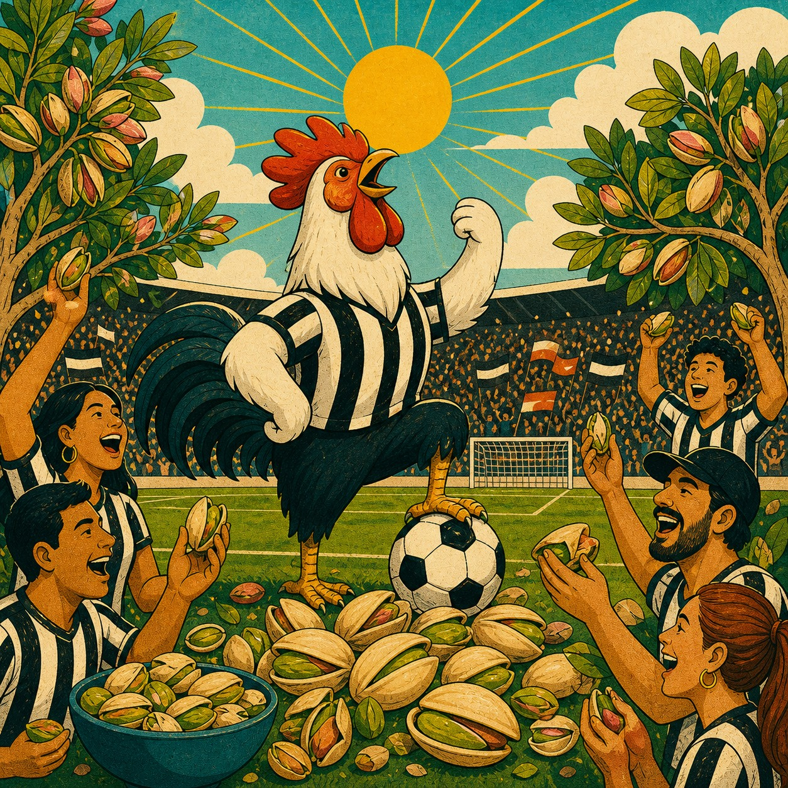
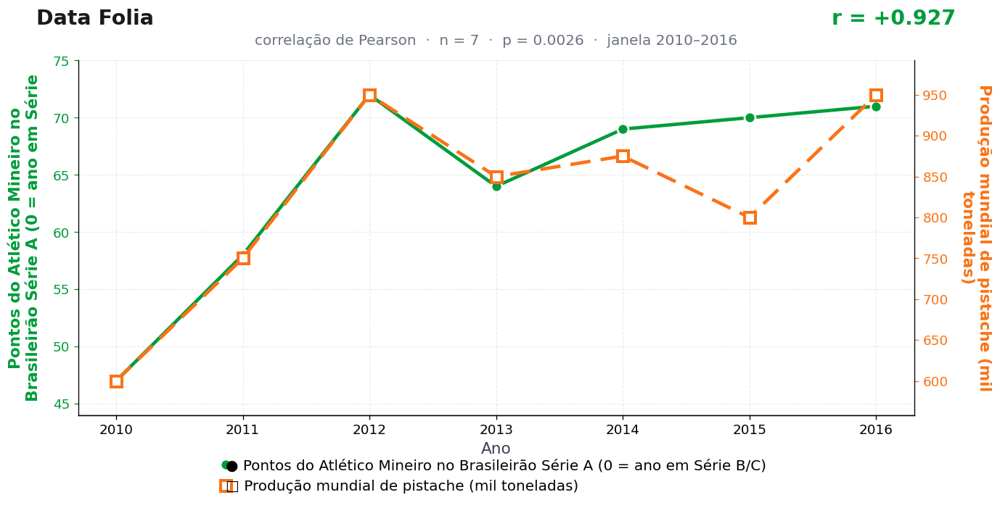

Post de 31/08/2026

A teoria
O Galo ensina resistência. Seus jogos pedem atenção até o fim, capacidade de roer ansiedade e disposição para quebrar casca antes de chegar ao alívio.
O pistache responde a essa cultura. Ele é o alimento perfeito para quem acompanha uma partida em estado de alerta: pequeno, insistente, difícil na entrada e recompensador no centro.
A produção acompanha a demanda emocional. Quando o Atlético aumenta a intensidade da temporada, o mundo agrícola prepara mais cascas para uma torcida treinada em paciência.
O conselho internacional das frutas secas segue sem uma cadeira para o Galo, numa injustiça histórica que este veículo não se cansará de apontar. Enquanto isso, a torcida continua quebrando cascas por conta própria, na base do improviso.
A teoria é ficção; a correlação é real: r = 0,93 (n = 7, p = 0,003).
Os dados por trás

- Pontos do Atlético Mineiro no Brasileirão Série A (0 = ano em Série B/C) — 7 pontos anuais, período 2010–2016. Fonte: CBF / Wikipedia — Campeonato Brasileiro Série A.
- Produção mundial de pistache (mil toneladas) — 7 pontos anuais, período 2010–2016. Fonte: International Nut & Dried Fruit Council (INC).
Como as correlações deste site são encontradas — e por que você não deve confiar nelas — está explicado na nossa metodologia.
Por que isso acontece?
Este par é garimpo assumido: cruzamos as campanhas de dezenas de clubes brasileiros com dezenas de séries mundiais de commodities e publicamos a combinação que colou. Se você testa algumas centenas de pares, a probabilidade de nenhum deles passar de r = 0,9 por acaso é baixíssima — o milagre seria não achar um Galo com pistache no meio.
As duas séries também ajudam: a produção mundial de pistache oscila em ciclo bienal (árvores alternam anos de safra cheia e fraca) e os pontos do Atlético sobem com oscilações no mesmo período. Com apenas 7 pontos, basta que dois ou três vales e picos coincidam de leve para o coeficiente subir a 0,93 — não é preciso nenhum alinhamento profundo.
É o retrato das comparações múltiplas: o p = 0,003 impresso no gráfico valeria para um teste único e pré-registrado. Para o vencedor de um campeonato de centenas de testes, ele não vale nada — e é por isso que está aqui, emoldurado como troféu.
Post de 31/08/2026 · publicado também no Instagram @datafolia.